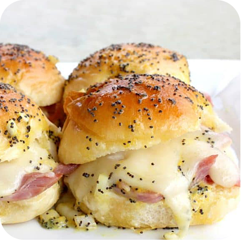

Odin Recipes

DESCRIPTION
Ham and Cheese Sliders are simple and crowd pleasing sandwiches great for
dinner, lunch, or potlucks. Ham and melted Swiss cheese topped with a poppy
seed butter sauce.
The sauce is a combo of Worcestershire sauce, onion, mustard, and butter
that makes these anything but ordinary.
INGREDIENTS
- 24 white dinner rolls
- 24 pieces honey ham
- 24 small slices Swiss cheese
- 1/3 cup mayonnaise
- 1/3 cup miracle whip
POPPY SEED SAUCE
- 1 teaspoon poppy seeds
- 1 1/2 Tablespoons yellow mustard
- 1/2 cup butter, melted
- 1 Tablespoon minced onion
- 1/2 teaspoon Worcestershire sauce
INSTRUCTIONS
-
In a small bowl, mix together mayonnaise and miracle whip.
Spread onto both sides of the center of each roll. Place a slice of
ham and a slice of Swiss inside of each roll. Close rolls and place
them into a large baking dish or heavy cookie sheet. Place very close
together.
-
In a medium bowl, whisk together all of the poppy seed sauce ingredients.
Pour evenly over all of the sandwiches. You do not have to use all of the
sauce! Just use enough to cover the tops. Let sit 10 minutes or until
butter sets slightly. Cover with foil and bake at 350 degrees for 12-15
minutes or until cheese is melted. Uncover and cook for 2 additional minutes
or until tops are slightly brown and crispy. Serve warm.
HOME